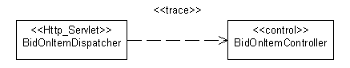

|
Artifact: Analysis Classes represent roles played by instances of
design elements; these roles may be fulfilled by one or more design model elements. In addition, a single design
element may fulfill multiple roles. The following observations discuss the ways the analysis roles may be fulfilled:
-
An analysis class can become a single design class in the design model.
-
An analysis class can become a part of a design class in the design model.
-
An analysis class can become an aggregate design class in the design model. (Meaning that the parts in this
aggregate may not be explicitly modeled as analysis classes.)
-
An analysis class can become a group of design classes that inherits from the same class in the design model.
-
An analysis class can become a group of functionally related design classes in the design model.
-
An analysis class can become a design subsystem in the design model.
-
An analysis class can become part of a design subsystem, such as one or more interfaces and their corresponding
implementation.
-
An analysis class can become a relationship in the design model.
-
A relationship between analysis classes can become a design class in the design model.
-
Analysis classes handle primarily functional requirements, and model objects from the "problem" domain; design
classes handle non-functional requirements, and model objects from the "solution" domain.
-
Analysis classes can be used to represent "the objects we want the system to support," without taking a decision on
how much of them to support with hardware and how much with software. Thus, part of an analysis class can be
realized by hardware, and not modeled in the design model at all.
Any combination of the above are also possible.
If a separate Analysis Model is maintained, be sure to maintain the traceability from the identified design element to
the Analysis Classes they correspond to. For more information, see Mapping to the Analysis Model.
This section only applies if a separate Analysis Model is maintained.
During design, design elements are identified which support a closer alignment with the architecture and chosen
technologies. Every Analysis Class in the Analysis Model should be associated with at least one design class in
the Design Model.
To model this traceability, a <<trace>> dependency should be drawn from the design element to the analysis
class(es) it represents, as shown in the following diagram:

Note: Traceability links are drawn from the Design Model elements to the Analysis Model elements, so that
the Design Model is dependent on the Analysis Model and not the other way around.
You should decide before the design starts how classes in the design model should relate to implementation classes;
this should be described in the Design Guidelines specific to the project.
The design model can be more or less close to the implementation model, depending on how you map its classes, packages
and subsystems to implementation classes, files, packages and subsystems in the implementation model. During
implementation, you will often address small tactical issues related to the implementation environment that shouldn't
have impact on the design model. For example, classes and subsystems can be added during implementation to handle
parallel development, or to adjust import dependencies. For more information, refer to Task: Structure the Implementation Model and Concept: Mapping from Design to Code.
There should be a consistent mapping from the design model to the implementation model. The  Artifact: Project-Specific Guidelines should define this mapping, and
a consistent level of abstraction should be applied across the design model. Artifact: Project-Specific Guidelines should define this mapping, and
a consistent level of abstraction should be applied across the design model.
A good design
model has the following characteristics:
-
It satisfies the system requirements.
-
It is resistant to changes in the implementation environment.
-
It is easy to maintain in relation to other possible object models and to system implementation.
-
It is clear how to implement.
-
It does not include information that is best documented in program code.
-
It is easily adapted to changes in requirements.
For specific characteristics, see Checklist: Design Model.
|